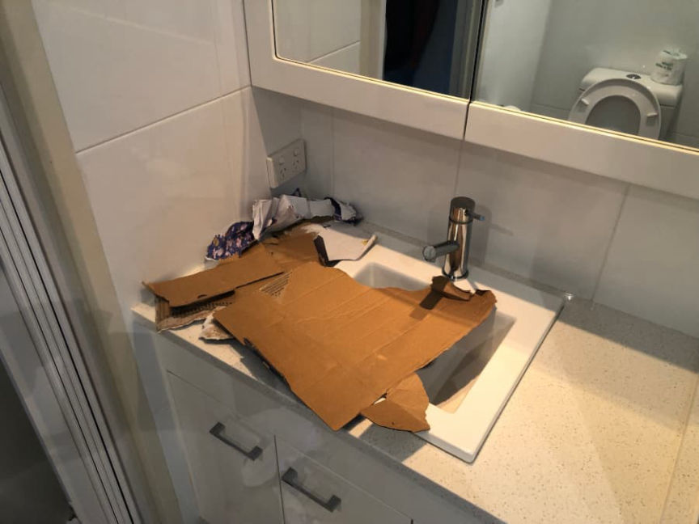
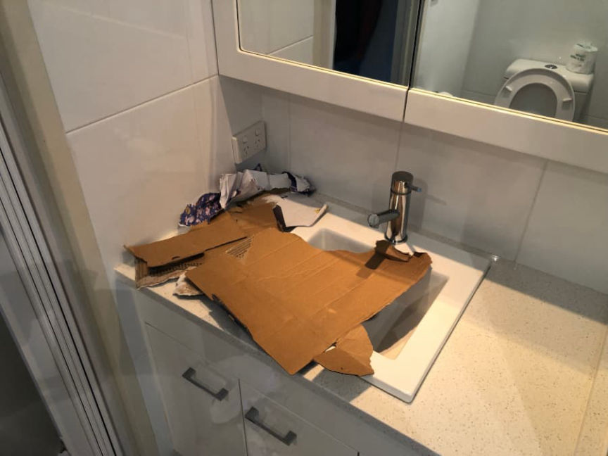

Australian Trio Charged for Importing Cocaine from Portugal
Authorities in Australia arrested and charged three men for allegedly importing 1.5 kilograms of cocaine.
The three men, a 48-year-old and a 32-year-old from New South Wales and a 35-year-old from Queensland were charged after authorities seized cocaine hidden inside a Playstation 5 console.

The investigation began after officers with the Australian Border Force (ABF) intercepted a suspicious package from Portugal. The sender had shipped the package to an address in Sydney, Australia. After opening the package, officers found approximately 1.5 kilograms of white powder hidden in a PlayStation 5 console. The white powder tested positive for cocaine, according to a press release from the Australian Federal Police (AFP).

Investigators replaced the cocaine with an inert substance and delivered the package to a residence in New South Wales. The 48-year-old defendant allegedly accepted the delivery of the package.
Further investigations conducted by the AFP, ABF, Queensland Police, and NSW Police investigators from Taskforce Sentry resulted in the arrest of the three suspects on October 12, 2021.

ABF Acting Commander Amanda Coppleman said, “Border detections by our officers are generating hundreds of referrals to the Taskforce. These detection referrals have included narcotic detections comprising cocaine, MDMA, GHB, and heroin.”
The three men appeared before the Southport Magistrates Court where they were each charged with attempting to possess a marketable quantity of border-controlled drugs.
The trio could be sentenced to a maximum of 25 years in prison if convicted.
The three men, a 48-year-old and a 32-year-old from New South Wales and a 35-year-old from Queensland were charged after authorities seized cocaine hidden inside a Playstation 5 console.
Border Force officers spotted cocaine inside the PS5.
The investigation began after officers with the Australian Border Force (ABF) intercepted a suspicious package from Portugal. The sender had shipped the package to an address in Sydney, Australia. After opening the package, officers found approximately 1.5 kilograms of white powder hidden in a PlayStation 5 console. The white powder tested positive for cocaine, according to a press release from the Australian Federal Police (AFP).
ABF officers took another one of the standard pictures with drugs and blue gloves.
Investigators replaced the cocaine with an inert substance and delivered the package to a residence in New South Wales. The 48-year-old defendant allegedly accepted the delivery of the package.
Further investigations conducted by the AFP, ABF, Queensland Police, and NSW Police investigators from Taskforce Sentry resulted in the arrest of the three suspects on October 12, 2021.

The AFP provided this picture of a package in what appears to be a bathroom. Presumably where officers found the package.
ABF Acting Commander Amanda Coppleman said, “Border detections by our officers are generating hundreds of referrals to the Taskforce. These detection referrals have included narcotic detections comprising cocaine, MDMA, GHB, and heroin.”
The three men appeared before the Southport Magistrates Court where they were each charged with attempting to possess a marketable quantity of border-controlled drugs.
The trio could be sentenced to a maximum of 25 years in prison if convicted.